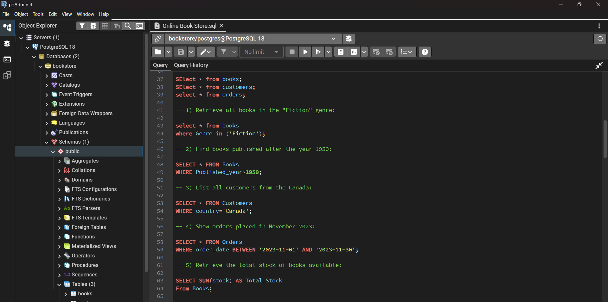

Projects

Microsoft Excel
Hospital Emergency Room Dashboard
Developed an interactive Hospital Emergency Room dashboard in Microsoft Excel to analyze patient flow, waiting time, admission rates, and department referrals. Utilized Pivot Tables, charts, and advanced Excel functions to transform raw data into meaningful visual insights. Identified key trends such as peak patient hours and high-demand departments, helping improve operational efficiency and decision-making.
View Project
SQL
Online Bookstore Sales & Customer Analysis
Performed comprehensive data analysis on an online bookstore dataset using SQL. Applied advanced concepts including joins, aggregations, subqueries, and window functions to extract insights on top-selling books, revenue trends, and customer segmentation. Discovered high-value customers and best-performing categories, enabling data-driven strategies to optimize sales and marketing efforts.
View Project
Power BI
Interactive Mobile Sales Dashboard
Designed and developed an interactive Mobile Sales Dashboard using Power BI to monitor key performance indicators such as total sales, revenue trends, city-wise performance, and payment methods. Leveraged Power Query for data transformation and DAX for calculated measures to create dynamic visualizations. Provided actionable insights that highlight regional performance differences and sales patterns.
View Project